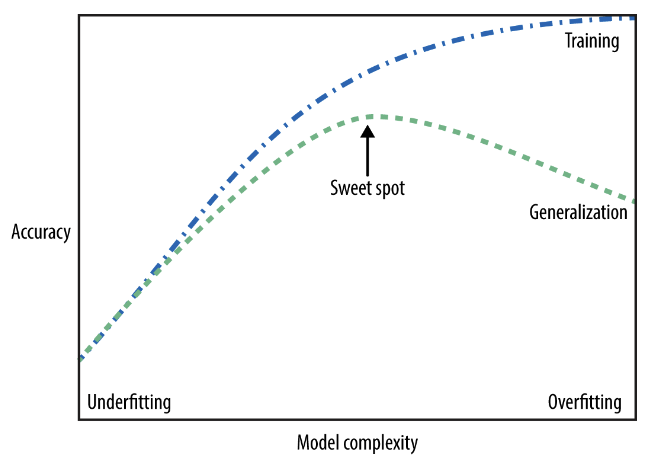

- You will have at least two weeks for each homework
- IA and I are here to help you, but it is very tough to respond the last minute's questions
- We are testing the forum functionality on Latte
- Fine to ask the same questions again and again
- Fine to challenge your homework/exam scores
- please send us a written appeal within a week
- if it is legit, regrade the your homework/exam entirely
- Working with others?
- What's the ideal situation when collaboration helps?
- In most cases, very unproductive
- At least, you have to try on your own at the first try

- The trade-off between overfitting and underfitting is illustrated in Figure 2-1 in the textbook.
Provide two different figures
- The first plot is from a very flexible learning model. That is, the true model is highly non linear
- The second plot is from a very inflexible learning model. That is, the true model is linear.
Linear regression
- A very simple approach for supervised learning
- Useful tool for prediction and inference
- even compared to the advanced models
- Many fancy statistical learning approaches are based on this simple model
We are going to see the end-to-end project for the linear model later
Let's revisit the question on advertising data
From the code, let's ask the following questions
- Is there a relationship between advertising budget and sales?
- if yes, which media?
- is the relationship linear?
- How strong is the relationship between advertising budget and sales?
- How large is the association between each medium and sales?
- How accurately can we predict future sales?
- How accurately can we predict future sales?
- How about synergy among the media?
How do we interpret the estimates?
Simple Linear Regression
- We assume that there is approximately a linear relationship between $X$ and $Y$
- $Y = \beta_0 + \beta_1 X +\epsilon$
- $Y \approx \beta_0 + \beta_1 X$
- here, $X$ is only one predictor
- In e.g., assume $\text{sales} \approx \beta_0 + \beta_1 TV$
- Two unkonwns $\beta_0, \beta_1$ are called model parameters
- We want to estimate them using data
- $\hat{\beta}_0, \hat{\beta}_1$ are the model estimates
- $\beta_1$ is of the interest for the LR
- In e.g.,
- $\text{sales} \approx 0.05 + 7.25 TV$
- $ \hat{\beta}_0 = 0.05, \hat{\beta}_1= 7.25 $
Estimators and Estimates
- We use data to estimates the parameters
- Suppose $(x_1,y_1),...,(x_n,y_n)$ represent $n$ observations
- in e.g., there are $n=200$ different markets
- Out goal is to obtain $\hat{\beta}_0, \hat{\beta}_1$ such that
$y_i\approx \hat{\beta}_0+\hat{\beta}_1 x_i$ for $i=1,...,n$
In other words, we want to find $\hat{\beta}_0$ and $\hat{\beta}_1$ such
that the resulting line is as close as possible to our data
The question is how to define closeness?
The most common approach is to use least squares
- See the following notations:
- $\hat{y}_i = \hat{\beta}_0+\hat{\beta}_1 x_i$
- $e_i =y_i- \hat{y}_i$
- $\text{RSS}=e_{1}^{2}+e_{2}^{2}+\cdots+e_{n}^{2}$
- RSS stands for the residual sum of squares
- The least squares approach chooses $\hat{\beta}_0, \hat{\beta}_1$ to minimize the RSS
- Let's interpret the codes
import pandas as pd
from sklearn import linear_model
df = pd.read_csv('Advertising.csv',index_col=0)
lr = linear_model.LinearRegression()
lr.fit(df[['TV']], df.sales)
print("lr.coef_:", lr.coef_)
print("lr.intercept_:", lr.intercept_)
- We have just estimated the parameters mechanically: $ \hat{\beta}_0 = 0.0475, \hat{\beta}_1= 7.03 $
- An additional $1,000 spent on TV adversing is associated with selling approximately 47.5 additional units of the product
Most models we will learn focus on the prediction, but now let's focus on inference as you did in econometrics or stat class
- How do we assess the accuracy of the estimates?
- This is different from the accuracy of the prediction
- Focus is on $\hat{Y}$ or $\hat{\beta}$?
More on inference
- We assume the true relationship as
$Y = \beta_0+\beta_1 X+\epsilon$
- $\epsilon$ is a catch-all for what we miss
- Assume that the error term is independent of $X$
- $\beta_0, \beta_1$ are unkonwns, but we have estimates $\hat{\beta}_0, \hat{\beta}_1$
- How do we know the accuracy of the estimates?
We want to uncover some relationship using a sample
Example
- Suppose we are interseted in knowing the population mean $\mu$ of some random variable $Y$
- $\mu$ is unknown
- we do have access to $n$ observations: $y_1,...,y_n$
- a resonable estimate is $\hat{\mu}=\bar{y}$
- Basically, we cannot be certain that $\mu = \bar{y}$
- However, the sample mean will provide a good estimate of the population mean
Sample mean is unbiased estimator of the population mean
What exactly does this mean?
- On the basis of one particular set of observations $y_1,...,y_n$, $\hat{\mu}$ might overestimate $\mu$
- For another set of observations, $\hat{\mu}$ might underestimate it
- But if we could average a huge number of estimates of $\mu$ obtained from a huge number of sets of observations, then this average
would exactly equal $\mu$
- $\hat{\beta}$, linear model estimator, is the unbiased estimator of $\beta$
This is just a mathematical property
We have not answered yet on how accurate our estimates are
Let's go back to statistics 101
We have established that the average of $\hat{\beta}$ over many data sets will be very close to $\beta$, but that a single estimate $\hat{\beta}$ may be a substantial underestimate or overestimate of $\beta$
How far off will that single estimate of $\hat{\beta}$ be?
Use the standard error of $\hat{\beta}: \sqrt{\text{Var} \hat{(\beta)}}=\text{SE}(\hat{\beta})$
Standard errors can be used to perform hypothesis tests on $\hat{\beta}$
- $H_0$: there is no relationship between $X$ and $Y$
- $H_a$: there is some relationship between $X$ and $Y$
- $H_0:\beta_1 = 0$
- $H_1:\beta_1 \ne 0$
- In practice, we compute a $t$-statistic: $t=\frac{\hat{\beta}_1 -0}{\text{SE}(\hat{\beta}_1)}$
Once we have rejected the null hypothesis, it is natural to want to quantify the extent to which the model fits the data
- You may learn $R^2$
- $R^2=1-\frac{\sum_{i}(y_i-\hat{y}_i)^2}{\sum_{i}(y_i-\bar{y})^2}$
- $R^2$ measures the proportion of variability in $Y$ that can be explained by using $X$
- higher $R^2$ implies that a large proportion of the variability in the response is
explained by the regression
- challenging to determine what is a good $R^2$ value